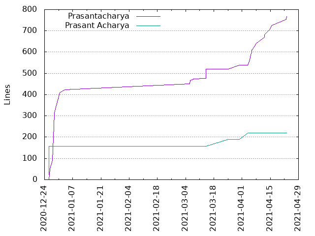
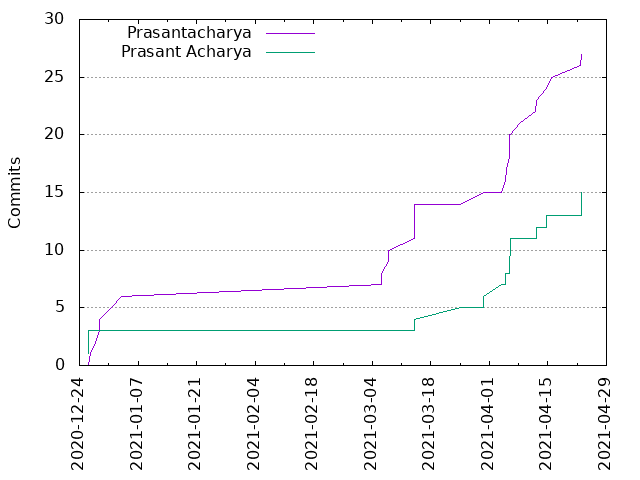

Authors
| Author | Commits (%) | + lines | - lines | First commit | Last commit | Age | Active days | # by commits |
|---|
| Prasantacharya | 27 (64.29%) | 767 | 471 | 2020-12-26 | 2021-04-22 | 117 days, 12:15:31 | 16 | 1 |
| Prasant Acharya | 15 (35.71%) | 220 | 0 | 2020-12-25 | 2021-04-22 | 118 days, 0:55:54 | 10 | 2 |


| Month | Author | Commits (%) | Next top 5 | Number of authors |
|---|
| 2021-04 | Prasantacharya | 12 (57.14% of 21) | Prasant Acharya | 2 |
| 2021-03 | Prasantacharya | 9 (75.00% of 12) | Prasant Acharya | 2 |
| 2021-01 | Prasantacharya | 1 (100.00% of 1) | | 1 |
| 2020-12 | Prasantacharya | 5 (62.50% of 8) | Prasant Acharya | 2 |
| Year | Author | Commits (%) | Next top 5 | Number of authors |
|---|
| 2021 | Prasantacharya | 22 (64.71% of 34) | Prasant Acharya | 2 |
| 2020 | Prasantacharya | 5 (62.50% of 8) | Prasant Acharya | 2 |
| Domains | Total (%) |
|---|
| rpi.edu | 42 (100.00%) |
|---|